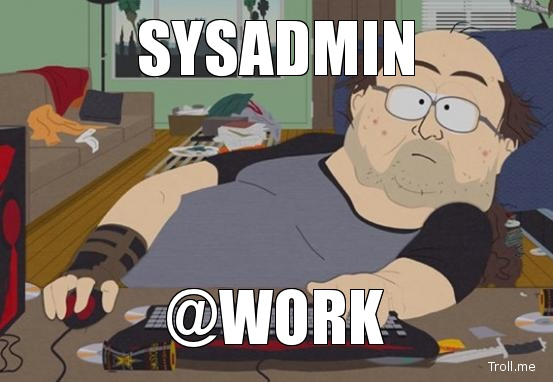

Docker
I built a SaaS and I shipped it
in a single afternoon
Created by Paul Czarkowski / @pczarkowski
About Me
Australian...

SysAdmin...

Corporate slave...
But not your typical corporation ...

Chef hacker...
Also the other kind of Chef...

Best Queso in Austin - 2013

And A Docker Hacker...

What is docker anyway?
Urbandictionary.com describes docking as ...
a verb describing the act of stretching one mans...
What is docker anyway?

The Problem
I want a persistent IRC connection
- That is connected even when I'm not.
- That I can connect from any of my machines.
- That I can read back on conversations I wasn't around for.
There's an OSS App for that - http://wiki.znc.in/ZNC
But I don't want to have to run a server.
There's a SaaS for that - http://ircrelay.com
But I don't want to pay $5 a month because I'm cheap.
I bet I could build a SaaS IRC Bouncer using docker...
First... Build a docker container to run ZNC
Dockerfile
# This file creates a container that runs ZNC
#
# Author: Paul Czarkowski
# Date: 08/04/2013
FROM ubuntu:12.10
MAINTAINER Paul Czarkowski "paul@paulcz.net"
RUN apt-get update
RUN apt-get -y install znc
ADD start-znc /usr/local/bin/start-znc
ADD znc.pem /opt/znc/znc.pem
ADD znc.conf /opt/znc/configs/znc.conf
RUN chmod +x /usr/local/bin/start-znc
RUN useradd znc
RUN chown -R znc:znc /opt/znc
EXPOSE 6667
# Start znc
CMD ["start-znc"]
start-znc
#!/bin/bash
ZNC_USER=${ZNC_USER:-$(tr -dc "[:alpha:]" < /dev/urandom | head -c 8)}
ZNC_PASS=${ZNC_PASS:-$(tr -dc "[:alpha:]" < /dev/urandom | head -c 8)}
IRC_SERVER=${IRC_SERVER:-'irc.freenode.net'}
IRC_PORT=${IRC_PORT:-'6667'}
ZNC_SALT="$(dd if=/dev/urandom bs=16c count=1 | md5sum | awk '{print $1}')"
ZNC_HASH="sha256#$(echo -n ${ZNC_PASS}${ZNC_SALT} | sha256sum | awk '{print $1}')#$ZNC_SALT#"
sed -i "s/ZNC_USER/$ZNC_USER/" /opt/znc/configs/znc.conf
sed -i "s/ZNC_HASH/$ZNC_HASH/" /opt/znc/configs/znc.conf
sed -i "s/IRC_SERVER/$IRC_SERVER/" /opt/znc/configs/znc.conf
sed -i "s/IRC_PORT/$IRC_PORT/" /opt/znc/configs/znc.conf
znc -f -r -d /opt/znc
Run it!
$ docker run -e ZNC_USER=paultest -e ZNC_PASS=paultest \
-p 6667 -u znc paulczar/znc start-znc
Connecting to IRC Server: irc.freenode.net:6667
ZNC User: paultest
ZNC Pass: paultest
Opening Config [/opt/znc/configs/znc.conf]...
Loading Global Module [lastseen]... [/usr/lib/znc/lastseen.so]
Binding to port [+6667] using ipv4...
Loading user [paultest]
Adding Server [irc.freenode.net 6667]...
That was easy ... now write a web app
I'm going to be ultra cool and use Node and Mongo!
- Install Node.JS
- Install MongoDB
- Find an Auth library to auth against google.
- ...
- ...
- I just remembered ... I'm a shit programmer.
Back to the drawing board...
Hey look this guy has done something similar for memcached...

It's not stealing if you fork...

Turns out its a fairly simply app
- Ruby on Rails
- Active Record
- Calls docker CLI with backtick commands.
- A retard like me can understand it... just.
Add Vagrant + Berkshelf / Chef
# -*- mode: ruby -*-
# vi: set ft=ruby :
require "vagrant"
if Vagrant::VERSION < "1.2.1"
raise "Use a newer version of Vagrant (1.2.1+)"
end
# Allows us to pick a different box by setting Environment Variables
BOX_NAME = ENV['BOX_NAME'] || "precise64"
BOX_URI = ENV['BOX_URI'] || "https://opscode-vm-bento.s3.amazonaws.com/vagrant/opscode_ubuntu-12.04_provisionerless.box"
Vagrant.configure("2") do |config|
# Cachier - speeds up subsequent runs.
# vagrant plugin install vagrant-cachier
config.cache.auto_detect = true
#config.cache.enable_nfs = true
config.berkshelf.enabled = true
# Ensure Chef 11.x is installed for provisioning
config.omnibus.chef_version = :latest
config.vm.define :SaasZNC do |config|
config.vm.hostname = "SaasZNC"
config.vm.box = BOX_NAME
config.vm.box_url = BOX_URI
config.vm.network :private_network, ip: "33.33.33.33"
config.vm.network :forwarded_port, guest: 3000, host: 3000
config.ssh.max_tries = 40
config.ssh.timeout = 120
config.ssh.forward_agent = true
config.vm.provision :chef_solo do |chef|
chef.provisioning_path = "/tmp/vagrant-cache"
chef.json = {
"languages" => {
"ruby" => {
"default_version" => "1.9.1"
}
}
}
chef.run_list = [
"recipe[apt::default]",
"recipe[ruby::default]",
"recipe[build-essential::default]",
"recipe[git::default]",
"recipe[docker::default]"
]
end
config.vm.provision :shell, :inline => <<-SCRIPT
groupadd docker
usermod -a -G docker vagrant
apt-get -y -q install libxslt-dev libxml2-dev libpq-dev sqlite3 libsqlite3-dev
gem install bundler --no-ri --no-rdoc
cd /vagrant
bundle install
rake db:migrate
rails server -d
SCRIPT
config.vm.provider :virtualbox do |vb|
vb.customize ["modifyvm", :id, "--cpus", 2]
vb.customize ["modifyvm", :id, "--memory", 2048]
end
end
end
Over the course of the next hour...
- Working prototype in Vagrant
- Create Rackspace public cloud instance
(<3 dev free cloud promo)i> - Config server using Chef Enterprise (5 servers free)
- Upload code with scp
- rails server -d -e production
- http://znc.paulcz.net


Stress Test
for i in {1..100}; do
docker run -e ZNC_USER=znctest$i -e ZNC_PASS=znctest$i -d -p 6667 -u znc paulczar/znc start-znc
done
A 512mb instance runs 100 ZNC containers without stress...
Would probably handle a lot more ...
but IRCops aren't amused...

Live Demo!

Links
THE END
BY Paul Czarkowski / @pczarkowski
ps Come eat my food